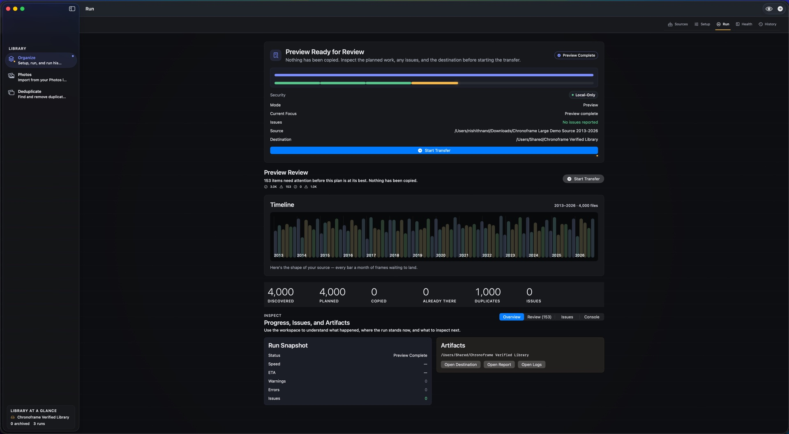

You’ll need a Mac running macOS 14 or later, a destination folder for the copies, and free space for both the copies and a temporary export while the import runs.
1. Set your destination first
Open Organize → Setup and choose the folder that will hold your dated library. Photos imports land there, in the same YYYY/MM/DD layout as everything else.
2. Allow Photos access
Open Photos in the sidebar and choose Allow Access…. Chronoframe asks to read your library; it never writes to it. If you limit access to selected photos, only those appear.
3. Choose what to export
Pick an album, then select the photos and videos you want. Start with one album or a small batch if this is your first time. Live Photos keep their still and movie together.
4. Review the plan, then import
Choose Review & Import. Chronoframe exports the original, unedited files to temporary staging, then shows the same preview plan as a folder import: dates, destination folders and anything that needs attention. When it looks right, start the transfer. Each copy is verified, and existing files in the destination are never overwritten.
5. Check History
Open History to see what was copied, skipped or could not copy. If something looks wrong, Revert removes the copies that run made, as long as they still match its receipt. Your Photos library is untouched either way.
What this doesn’t do
Chronoframe exports the original files, not your edits. Crops, filters and other adjustments made in Photos are not applied to the copies, and nothing is removed from Photos afterward, so the library keeps its full size. Originals stored only in iCloud are downloaded through Apple first, which needs a connection and extra temporary space.
What Chronoframe does, in plain terms
- Read-only Apple Photos import of unedited originals into dated folders.
- Preview first; copies verified; nothing in Photos changed.
- The same Organize workflow for loose folders, camera cards and drives.
- No uploads, no Chronoframe account, no subscription. Processing happens on your Mac, on macOS 14 or later.
- Free allowance: 500 files organized plus 100 duplicates moved to Trash, per Apple Account per Mac.
- $14.99 once for the lifetime unlock, with Family Sharing included.
How Chronoframe protects your files →
Organize · Export from Photos · Find duplicates — all in Chronoframe for Mac: Organize photos into dated folders · Export Apple Photos originals · Find duplicate photos · Compare the alternatives